← Lesson 6: Callbacks & Tuning Lesson 7 / 12 · CNN
Lesson 8: CNN Architectures & Transfer Learning →
Lecture7 (deep_learning_part3_1.pdf, 30 หน้า) · 2603520 Deep Learning
Convolutional Neural Networks: Convolution, Padding, Stride, Pooling และการนับ Parameter
Lesson 1–6 ใช้ network แบบ dense (fully connected) ทั้งหมด: ทุก node ต่อกับทุก node ของ layer ก่อนหน้า. บทนี้เปลี่ยนชนิดของ layer สำหรับข้อมูลภาพ. ส่วนที่ต้องคำนวณมือได้มีสามเรื่อง:
ค่าใน feature map จากการเลื่อน filter ทับภาพ (หน้า 7–9)ขนาด output ของ convolution/pooling จากสูตร \(\lfloor (n+2p-f)/s \rfloor + 1\) (หน้า 12–20)จำนวน parameter ของแต่ละ layer ในตารางหน้า 21
สัญลักษณ์ที่ใช้ทั้งบท
\(n\) = ความกว้าง/สูงของ input (ภาพหรือ feature map), เขียนแยกเป็น \(n_W, n_H\) เมื่อไม่เท่ากัน
\(n_C\) = จำนวน channel ของ input (ภาพ grayscale = 1, ภาพสี RGB = 3)
\(f\) = ขนาด filter (filter \(f \times f\)), \(p\) = จำนวนขอบที่ pad เพิ่มแต่ละด้าน, \(s\) = stride
\(n_C'\) = จำนวน filter ของ layer = จำนวน channel ของ output
\(\lfloor x \rfloor\) = ปัดลง (floor)
ต้องรู้ก่อน — ภาพคือ matrix ของตัวเลข
ภาพ grayscale ขนาด 28×28 คือ matrix 28 แถว 28 คอลัมน์ แต่ละช่องเก็บความสว่างของ pixel (0 = ดำ, 255 = ขาว). ภาพสีเก็บ 3 matrix ซ้อนกัน (Red, Green, Blue) จึงมี shape (สูง, กว้าง, 3). มิติที่สามเรียกว่า channel หรือ depth.
Dense layer ของ Lesson 5 รับได้เฉพาะ vector จึงต้อง flatten ภาพ 28×28 เป็น vector ยาว 784 ก่อน. CNN รับ matrix เข้าไปตรงๆ โดยไม่ flatten.
1. Computer Vision และเหตุผลที่ Dense Network ไม่เหมาะกับภาพ
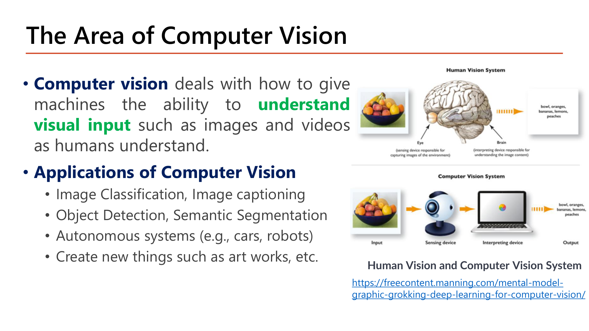
Slide: The Area of Computer Vision — นิยามและงานประยุกต์ (Lecture7, p.2)
Computer vision คือสาขาที่ทำให้เครื่องมีความสามารถ understand visual input เช่นภาพและวิดีโอ ในแบบที่มนุษย์เข้าใจ. ระบบของมนุษย์มีตา (sensing device) ส่งสัญญาณให้สมอง (interpreting device). ระบบของคอมพิวเตอร์มีกล้องเป็น sensing device และโมเดลเป็น interpreting device ซึ่งให้ output เดียวกัน เช่น "bowl, oranges, bananas, lemons, peaches".
Applications of Computer Vision ที่สไลด์ระบุมี 4 กลุ่ม:
Image Classification, Image captioning
Object Detection, Semantic Segmentation (Lesson 9 )
Autonomous systems (e.g., cars, robots)
Create new things such as art works
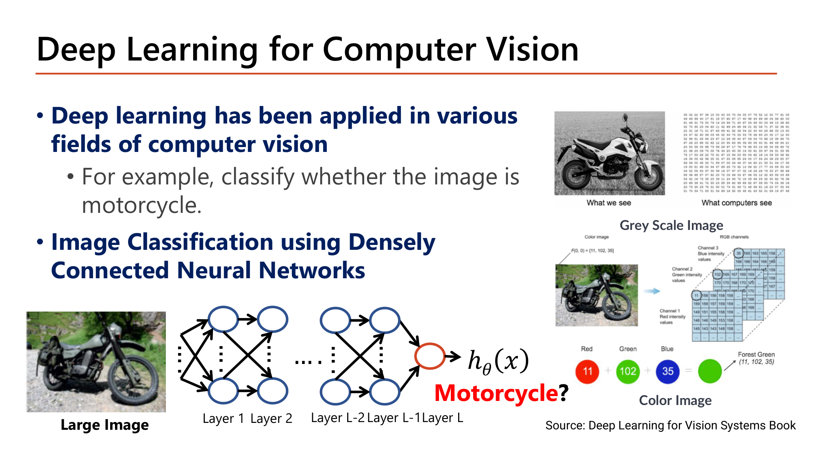
Slide: Deep Learning for Computer Vision — จำแนกภาพด้วย dense network (Lecture7, p.3)
Deep learning has been applied in various fields of computer vision . ตัวอย่างในสไลด์คือการจำแนกว่าภาพเป็น Motorcycle หรือไม่ (binary classification, output เดียวผ่าน sigmoid). วิธีแรกที่ทำได้ด้วยความรู้เดิมคือ Image Classification using Densely Connected Neural Networks : flatten ภาพเป็น vector แล้วป้อนเข้า dense layer.
คอมพิวเตอร์เห็นภาพ grayscale เป็นตารางตัวเลข 1 ชั้น. ภาพสีเป็นตาราง 3 ชั้น: pixel ที่มีค่า (R, G, B) = (11, 102, 35) คือสี forest green. จำนวน input feature จึงเท่ากับ สูง × กว้าง × จำนวน channel.
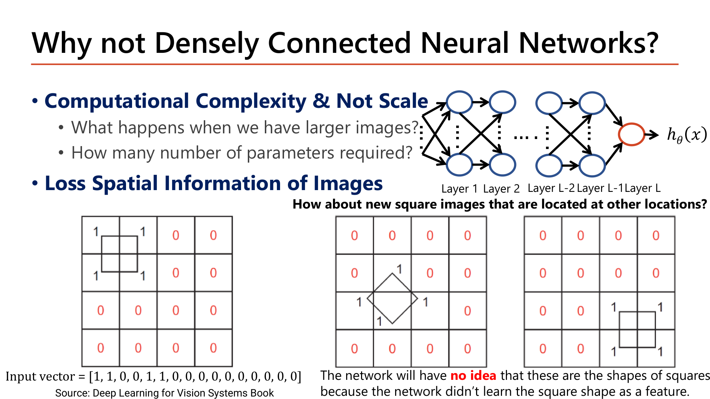
Slide: Why not Densely Connected Neural Networks? — สองปัญหา (Lecture7, p.4)
สไลด์ให้เหตุผลสองข้อที่ dense network ใช้กับภาพไม่ดี.
ข้อ 1: Computational Complexity & Not Scale . จำนวน weight ของ dense layer แรก = (จำนวน input) × (จำนวน node) และจำนวน input โตตามพื้นที่ภาพ.
คำนวณ: จำนวน parameter ของ dense layer แรก เมื่อภาพใหญ่ขึ้น
ให้ dense layer แรกมี 1,000 node (แต่ละ node มี bias 1 ตัว). สูตรจาก Lesson 5: \(\#\text{param} = n_{in} \times n_{out} + n_{out}\)
ขั้นที่ 1 — ภาพสี 32×32
$$\begin{gathered}n_{in} = 32 \times 32 \times 3 = 3{,}072 \\[0.35em] \Rightarrow\; 3{,}072 \times 1{,}000 + 1{,}000 = 3{,}073{,}000\end{gathered}$$ขั้นที่ 2 — ภาพสี 1000×1000
$$\begin{gathered}n_{in} = 1000 \times 1000 \times 3 = 3{,}000{,}000 \\[0.35em] \Rightarrow\; 3{,}000{,}000 \times 1{,}000 + 1{,}000 = 3{,}000{,}001{,}000\end{gathered}$$ขั้นที่ 3 — เทียบกับ convolution layer ที่มี 10 filter ขนาด 3×3 บนภาพสี (สูตรใน §5)
$$(3 \times 3 \times 3 + 1) \times 10 = 280 \quad\text{(เท่ากันทุกขนาดภาพ)}$$
ด้านยาวขึ้นราว 31 เท่า parameter ของ dense layer แรกเพิ่มจาก 3 ล้านเป็น 3 พันล้าน. จำนวน parameter ของ convolution layer ไม่ขึ้นกับขนาดภาพ ขึ้นกับขนาด filter, จำนวน channel และจำนวน filter เท่านั้น.
ข้อ 2: Loss Spatial Information of Images . การ flatten ทำลายข้อมูลว่า pixel ไหนอยู่ติดกัน. ตารางแรกในสไลด์เป็นภาพ 4×4 ที่มีสี่เหลี่ยมอยู่มุมซ้ายบน (pixel ค่า 1 ที่ตำแหน่ง (1,1), (1,2), (2,1), (2,2)). เมื่อ flatten ทีละแถวได้
$$\text{Input vector} = [1, 1, 0, 0,\; 1, 1, 0, 0,\; 0, 0, 0, 0,\; 0, 0, 0, 0]$$
ค่า 1 สองตัวของแถวบน (ตำแหน่ง 1–2) กับสองตัวของแถวล่าง (ตำแหน่ง 5–6) ซึ่งติดกันในภาพ ถูกแยกห่างกัน 4 ตำแหน่งใน vector. Dense network เรียน weight แยกต่อตำแหน่ง จึงเรียนได้แค่ว่า "ตำแหน่ง 1, 2, 5, 6 เป็น 1". ถ้าสี่เหลี่ยมเดียวกันย้ายไปมุมขวาล่าง ค่า 1 จะไปอยู่ตำแหน่ง 11, 12, 15, 16 ซึ่งใช้ weight คนละชุดที่ไม่เคยถูกเทรน. สไลด์สรุปว่า network จะ no idea ว่ารูปเหล่านี้คือสี่เหลี่ยม เพราะไม่ได้เรียนรูปทรงสี่เหลี่ยมเป็น feature.
ออกสอบสูง — ข้อความที่อาจารย์ทำสี
Computer vision = ให้เครื่อง understand visual input (ภาพ, วิดีโอ) แบบที่มนุษย์เข้าใจ. กับดัก: ตัวเลือกที่นิยามว่าเป็นการ "สร้างภาพ" หรือ "บีบอัดภาพ"เหตุผลที่ไม่ใช้ dense กับภาพมีสองข้อ: Computational Complexity & Not Scale (parameter โตตามขนาดภาพ) และ Loss Spatial Information of Images (flatten แล้วความสัมพันธ์เชิงตำแหน่งหาย)
วัตถุเดิมย้ายตำแหน่ง ⇒ dense network no idea เพราะ weight ผูกกับตำแหน่ง pixel
2. CNN: ที่มาและโครงสร้างระดับบน
Slide: Convolutional Neural Networks (CNNs) — ที่มาจาก visual cortex (Lecture7, p.5)
CNN (อีกชื่อคือ ConvNets ) เกิดในทศวรรษ 1980 จากการศึกษา visual cortex ของสมอง. ข้อค้นพบของ Hubel & Wiesel (1968) ที่สไลด์อ้างมีสองข้อ และทั้งสองข้อกลายเป็นหลักออกแบบ CNN:
neuron จำนวนมากใน visual cortex มี receptive field ขนาดเล็กเฉพาะที่ คือตอบสนองต่อสิ่งเร้าในบริเวณจำกัดของลานสายตาเท่านั้น ⇒ ใน CNN neuron หนึ่งตัวต่อกับ pixel กลุ่มเล็ก ไม่ต่อทั้งภาพ
neuron ระดับสูงทำงานจาก output ของ neuron ระดับล่างที่อยู่ใกล้กัน ⇒ ใน CNN layer ลึกรวม feature ง่าย (เส้น, ขอบ) เป็น feature ซับซ้อน (รูปทรง, วัตถุ)
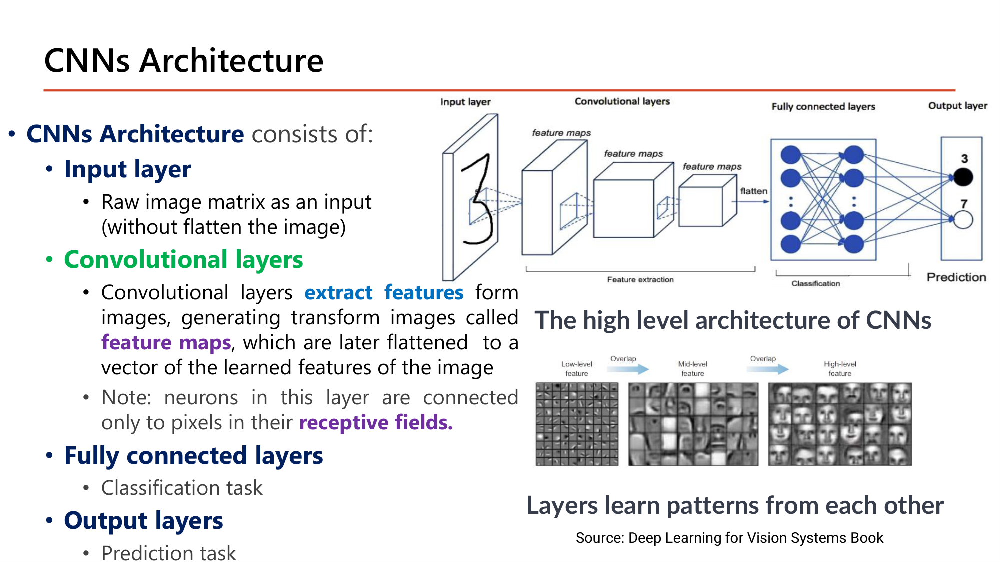
Slide: CNNs Architecture — สี่ส่วนของ CNN (Lecture7, p.6)
CNNs Architecture ประกอบด้วยสี่ส่วนเรียงกัน:
ส่วน ข้อความในสไลด์ หน้าที่ Input layer Raw image matrix as an input (without flatten the image) รับภาพเป็น matrix เช่น (28, 28, 1) Convolutional layers extract features จากภาพ ได้ภาพที่ถูกแปลงเรียกว่า feature maps ซึ่งภายหลังถูก flatten เป็น vector ของ feature ที่เรียนได้feature extraction Fully connected layers Classification task รับ vector ของ feature มาจำแนก Output layers Prediction task ให้ความน่าจะเป็นของแต่ละ class
หมายเหตุในสไลด์: neuron ใน convolutional layer ต่อเฉพาะกับ pixel ใน receptive fields. ของตัวเอง ต่างจาก dense layer ที่ต่อกับ input ทุกตัว. รูปล่างของสไลด์แสดงลำดับชั้นของ feature: layer ต้นเรียน low-level feature (ขอบ, เส้น), layer กลางเรียนชิ้นส่วน (ตา, จมูก), layer ลึกเรียน high-level feature (ใบหน้าทั้งหน้า).
ออกสอบสูง — ข้อความที่อาจารย์ทำสี
CNN = ConvNets มาจากการศึกษา visual cortex ; แนวคิดหลักคือ receptive field เฉพาะที่
ลำดับ 4 ส่วน: Input layer → Convolutional layers → Fully connected layers → Output layers . Input ของ CNN ไม่ flatten ; flatten เกิดหลัง convolutional layers
Convolutional layers extract features และให้ผลเป็น feature maps . กับดัก: ตัวเลือกที่บอกว่า convolutional layer ทำ classification (นั่นคือ fully connected layers)
3. Convolution Operation และ Filter
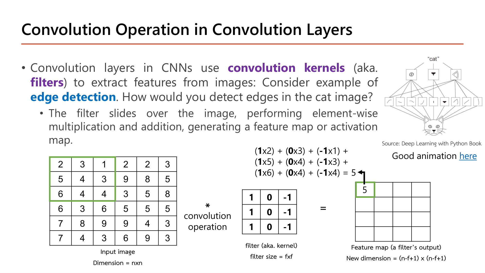
Slide: Convolution Operation in Convolution Layers — ตัวอย่าง 6×6 กับ filter 3×3 (Lecture7, p.7)
Convolution layer ใช้ convolution kernels (อีกชื่อคือ filters ) สกัด feature จากภาพ. ตัวอย่างในสไลด์คือ edge detection . วิธีคำนวณ: filter เลื่อนไปบนภาพทีละตำแหน่ง ที่แต่ละตำแหน่งคูณค่าที่ซ้อนกันทีละคู่ (element-wise multiplication) แล้วบวกทั้งหมด ได้ตัวเลข 1 ตัว. ตัวเลขทั้งหมดเรียงกันเป็น feature map (หรือ activation map).
คำนวณตามสไลด์: feature map แถวแรก (input 6×6, filter 3×3, ไม่มี padding, stride 1)
ให้ input สามแถวแรก: \([2,3,1,2,2,3]\), \([5,4,3,9,8,5]\), \([6,4,4,3,5,8]\) และ filter ทุกแถวเป็น \([1, 0, -1]\)
ขั้นที่ 1 — ลดรูป filter
คอลัมน์ซ้ายของ filter คูณ 1, คอลัมน์กลางคูณ 0, คอลัมน์ขวาคูณ −1. ผลลัพธ์จึงเท่ากับ
$$\text{output} = \textstyle\sum \text{คอลัมน์ซ้าย} - \sum \text{คอลัมน์ขวา}$$ขั้นที่ 2 — ตำแหน่ง (1,1): หน้าต่างคลุมคอลัมน์ 1–3
$$\begin{aligned}&(1{\times}2)+(0{\times}3)+(-1{\times}1)\\ +\,&(1{\times}5)+(0{\times}4)+(-1{\times}3)\\ +\,&(1{\times}6)+(0{\times}4)+(-1{\times}4) = 13 - 8 = 5\end{aligned}$$ขั้นที่ 3 — เลื่อนขวา 1 ช่อง: คอลัมน์ 2–4
$$(3+4+4) - (2+9+3) = 11 - 14 = -3$$ขั้นที่ 4 — คอลัมน์ 3–5 และ 4–6
$$\begin{gathered}(1+3+4) - (2+8+5) = 8 - 15 = -7\\ (2+9+3) - (3+5+8) = 14 - 16 = -2\end{gathered}$$ขั้นที่ 5 — ขนาด feature map
$$n - f + 1 = 6 - 3 + 1 = 4 \quad\Rightarrow\quad 4 \times 4$$
แถวแรกของ feature map คือ \([5, -3, -7, -2]\). ทำซ้ำอีก 3 แถวได้ feature map เต็ม (ตรงกับที่สไลด์หน้า 12 และ 23 พิมพ์ไว้):
$$\begin{bmatrix} 5 & -3 & -7 & -2\\ 4 & -6 & -5 & -1\\ 0 & -2 & 5 & 1\\ 2 & -5 & 0 & 9 \end{bmatrix}$$
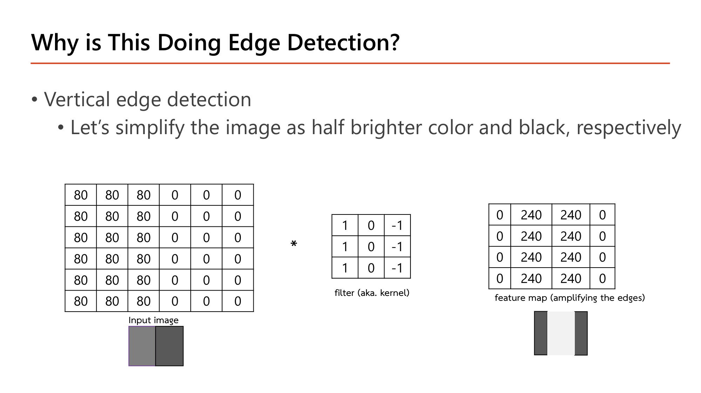
Slide: Why is This Doing Edge Detection? — vertical edge (Lecture7, p.8)
ภาพหน้า 8 ถูกทำให้ง่าย: ครึ่งซ้ายสว่าง (80) ครึ่งขวาดำ (0) จึงมีขอบแนวตั้งหนึ่งเส้นตรงกลาง. ใช้กฎ "คอลัมน์ซ้าย − คอลัมน์ขวา" ของ filter เดิม:
หน้าต่างคอลัมน์ 1–3 (80 ทั้งหมด): \(3(80) - 3(80) = 0\)
หน้าต่างคอลัมน์ 2–4 (ซ้าย 80, ขวา 0): \(3(80) - 3(0) = 240\)
หน้าต่างคอลัมน์ 3–5 (ซ้าย 80, ขวา 0): \(240\)
หน้าต่างคอลัมน์ 4–6 (0 ทั้งหมด): \(0 - 0 = 0\)
Feature map จึงเป็น \([0, 240, 240, 0]\) ทุกแถว. บริเวณสีเรียบให้ 0 ไม่ว่าจะสว่างหรือมืด. ค่าสูงเกิดเฉพาะตำแหน่งที่หน้าต่างคร่อมขอบ. filter นี้จึงเป็นตัวตรวจ vertical edge และ feature map "amplifying the edges".
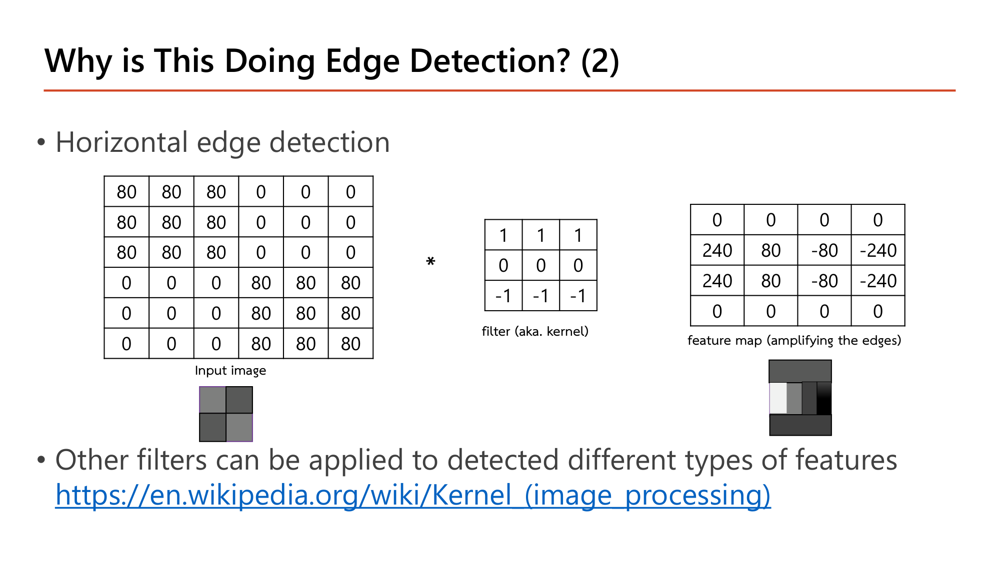
Slide: Why is This Doing Edge Detection? (2) — horizontal edge (Lecture7, p.9)
หมุน filter 90° ให้แถวบนเป็น 1, แถวกลางเป็น 0, แถวล่างเป็น −1 จะได้ output = (ผลรวมแถวบน) − (ผลรวมแถวล่าง) ซึ่งตรวจ horizontal edge. ภาพหน้า 9 มีมุมซ้ายบนและขวาล่างสว่าง (80).
คำนวณตามสไลด์: แถวที่ 2 ของ feature map หน้า 9
ให้ หน้าต่างคลุมแถว 2–4 ของภาพ. แถว 2 = \([80,80,80,0,0,0]\) (แถวบนของหน้าต่าง), แถว 4 = \([0,0,0,80,80,80]\) (แถวล่างของหน้าต่าง)
ขั้นที่ 1 — คอลัมน์ 1–3
$$(80+80+80) - (0+0+0) = 240$$ขั้นที่ 2 — คอลัมน์ 2–4
$$(80+80+0) - (0+0+80) = 160 - 80 = 80$$ขั้นที่ 3 — คอลัมน์ 3–5
$$(80+0+0) - (0+80+80) = 80 - 160 = -80$$ขั้นที่ 4 — คอลัมน์ 4–6
$$(0+0+0) - (80+80+80) = -240$$
แถวที่ 2 (และแถวที่ 3) = \([240, 80, -80, -240]\). แถวที่ 1 และ 4 เป็น 0 เพราะหน้าต่างคลุมแถวบนและแถวล่างที่เหมือนกัน. เครื่องหมายบอกทิศของขอบ: บวก = สว่างอยู่บน มืดอยู่ล่าง; ลบ = มืดอยู่บน สว่างอยู่ล่าง. ค่า 80 และ −80 คือช่วงเปลี่ยนผ่านตรงกลางภาพที่ขอบทั้งสองทิศปนกัน.
สไลด์ปิดหน้า 9 ว่า filter แบบอื่นใช้ตรวจ feature ชนิดอื่นได้ (blur, sharpen, ขอบแนวทแยง).
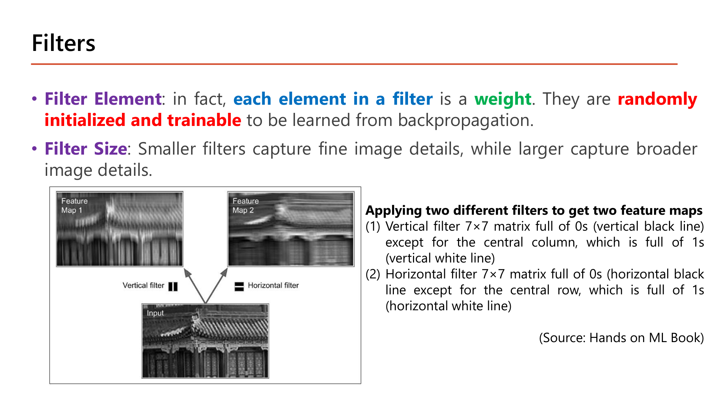
Slide: Filters — แต่ละช่องคือ weight ที่เรียนได้ (Lecture7, p.10)
ค่า 1, 0, −1 ที่ใช้มาเป็นค่าที่คนตั้งเองเพื่ออธิบาย. ใน CNN จริง:
Filter Element : each element in a filter คือ weight หนึ่งตัว. ค่าเหล่านี้ randomly initialized and trainable คือเริ่มจากค่าสุ่มแล้วเรียนด้วย backpropagation เหมือน \(\theta\) ของ dense layer (Lesson 3 ). network จึงเลือกเองว่าควรตรวจ feature ชนิดใดFilter Size : filter เล็กจับรายละเอียดละเอียดของภาพ (fine details), filter ใหญ่จับรายละเอียดกว้าง (broader details)
ตัวอย่างในสไลด์ใช้ filter 7×7 สองตัวกับภาพอาคาร. (1) Vertical filter: เป็น 0 ทั้งหมดยกเว้นคอลัมน์กลางเป็น 1 ⇒ Feature Map 1 เส้นแนวตั้งชัดขึ้น ส่วนอื่นเบลอ. (2) Horizontal filter: เป็น 0 ทั้งหมดยกเว้นแถวกลางเป็น 1 ⇒ Feature Map 2 เส้นแนวนอนชัดขึ้น. input เดียวกัน filter ต่างกันให้ feature map ต่างกัน.
คำถาม 1 Convolution
ภาพ 4×4 มีแถว [1,2,0,1], [3,1,1,0], [0,2,4,1], [2,0,1,3] ทำ convolution กับ filter 3×3 ที่ทุกแถวเป็น [1,0,−1] (ไม่มี padding, stride 1) ค่าที่ตำแหน่งซ้ายบนของ feature map คือเท่าใด?
9
4
−1
−5
คำถาม 2 Edge detection
ภาพ 6×6 มี 3 คอลัมน์ซ้ายเป็น 0 และ 3 คอลัมน์ขวาเป็น 50 ทำ convolution กับ filter 3×3 ที่ทุกแถวเป็น [1,0,−1] (ไม่มี padding, stride 1) แต่ละแถวของ feature map คือข้อใด?
[0, −150, −150, 0]
[0, 150, 150, 0]
[−150, 0, 0, −150]
[0, −50, −50, 0]
ออกสอบสูง — ข้อความที่อาจารย์ทำสี
convolution kernels = filters (สองคำนี้คือสิ่งเดียวกัน). ตัวอย่างการใช้งานคือ edge detection ขนาด feature map เมื่อไม่มี padding, stride 1: \((n-f+1) \times (n-f+1)\)
each element in a filter คือ weight ที่ randomly initialized and trainable . กับดัก: ตัวเลือกที่บอกว่า filter ถูกกำหนดค่าตายตัวโดยผู้ออกแบบFilter Size : เล็ก = fine details, ใหญ่ = broader details
4. Padding และ Stride
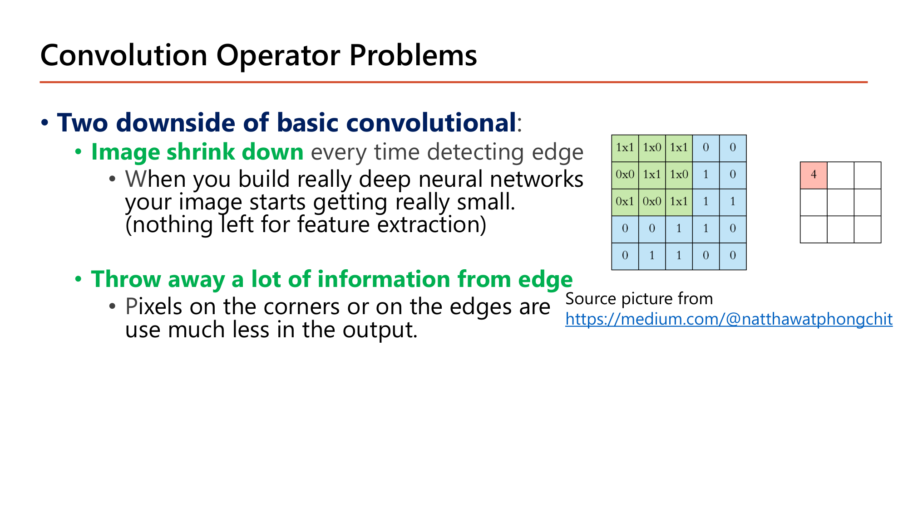
Slide: Convolution Operator Problems — สองข้อเสีย (Lecture7, p.11)
Two downside of basic convolutional :
Image shrink down ทุกครั้งที่ทำ convolution. ภาพ 5×5 กับ filter 3×3 ในสไลด์ให้ output \(5-3+1 = 3\) คือ 3×3. network ลึกจะทำให้ภาพเล็กลงจนไม่เหลือให้สกัด feature: ภาพ 32×32 ผ่าน filter 3×3 แต่ละครั้งด้านลดลง 2 จึงเหลือ 2×2 หลัง 15 layerThrow away a lot of information from edge . pixel มุมถูกหน้าต่างคลุมเพียง 1 ครั้ง ส่วน pixel กลางภาพ 5×5 ถูกคลุม 9 ครั้ง ข้อมูลที่ขอบจึงมีน้ำหนักใน output น้อยกว่ามาก
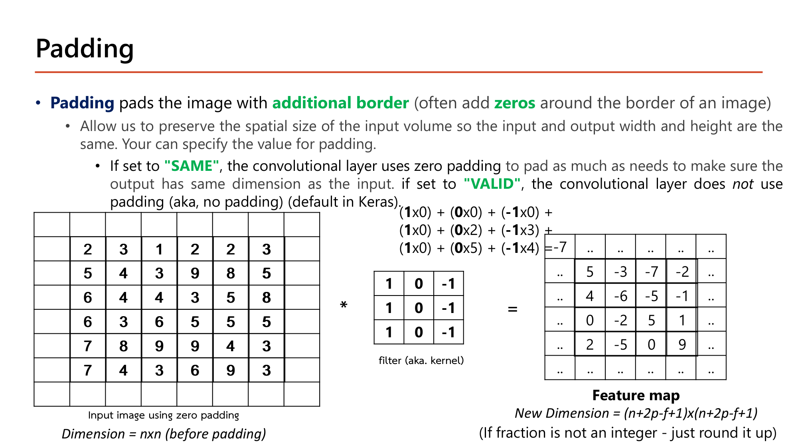
Slide: Padding — เติมขอบด้วยศูนย์ (Lecture7, p.12)
Padding คือการเติม additional border รอบภาพ (ส่วนใหญ่เติม zeros ) เพื่อรักษาขนาดเชิงพื้นที่ ให้ความกว้างและสูงของ output เท่ากับ input. Keras มีสองค่า:
"SAME" : ใช้ zero padding เท่าที่จำเป็นเพื่อให้ output มีขนาดเท่า input"VALID" : ไม่ใช้ padding (no padding) และเป็นค่า default ของ Keras
$$\text{New dimension} = (n + 2p - f + 1) \times (n + 2p - f + 1)$$
เติมขอบข้างละ p ทำให้ด้านยาวขึ้น 2p ก่อนเข้าสูตรเดิม n − f + 1
คำนวณตามสไลด์: padding 1 ชั้นกับภาพ 6×6 และ filter 3×3
ให้ \(n = 6,\ f = 3,\ p = 1\), stride 1, ภาพและ filter ชุดเดิมจากหน้า 7
ขั้นที่ 1 — ขนาด output
$$\begin{gathered}n + 2p - f + 1 = 6 + 2(1) - 3 + 1 = 6 \\[0.35em] \Rightarrow\; 6 \times 6 \text{ (เท่า input)}\end{gathered}$$ขั้นที่ 2 — ค่าที่มุมซ้ายบน: หน้าต่างคลุมขอบศูนย์ 1 แถว 1 คอลัมน์ กับ pixel 2,3 / 5,4
$$\begin{aligned}&(1{\times}0)+(0{\times}0)+(-1{\times}0)\\ +\,&(1{\times}0)+(0{\times}2)+(-1{\times}3)\\ +\,&(1{\times}0)+(0{\times}5)+(-1{\times}4) = -7\end{aligned}$$ขั้นที่ 3 — หาค่า p ที่ทำให้ขนาดคงเดิม (SAME, stride 1)
$$n + 2p - f + 1 = n \quad\Rightarrow\quad p = \frac{f-1}{2}$$
\(f=3 \Rightarrow p=1\); \(f=5 \Rightarrow p=2\); \(f=7 \Rightarrow p=3\). filter จึงนิยมใช้ขนาดคี่
Output เป็น 6×6. ส่วน 4×4 ตรงกลางคือ feature map เดิมของหน้า 7 (\(5, -3, -7, -2, \ldots\)) และมีขอบใหม่รอบนอก 1 ชั้นซึ่งมุมซ้ายบนเท่ากับ −7. pixel มุมของภาพถูกใช้ในหลายหน้าต่างขึ้น ข้อเสียทั้งสองข้อของหน้า 11 จึงลดลง.
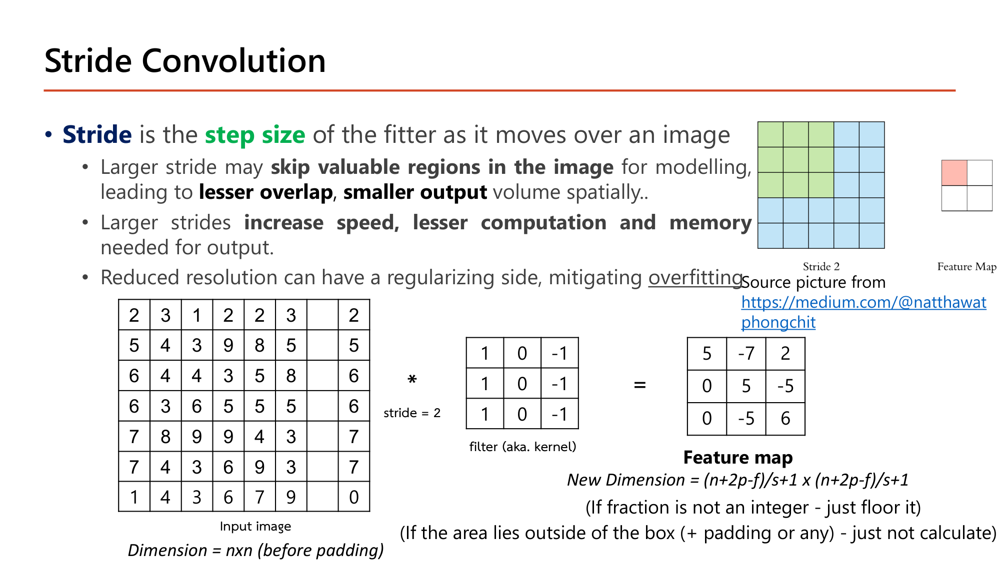
Slide: Stride Convolution — ก้าวทีละ s ช่อง (Lecture7, p.13)
Stride คือ step size ของ filter ขณะเลื่อนไปบนภาพ. stride 1 เลื่อนทีละ 1 ช่อง; stride 2 ข้ามทีละ 2 ช่องทั้งแนวนอนและแนวตั้ง. ผลของ stride ที่ใหญ่ขึ้นตามสไลด์:
อาจ skip valuable regions in the image ทำให้ lesser overlap และ smaller output volume
increase speed, lesser computation and memory ที่ต้องใช้กับ outputความละเอียดที่ลดลงมีผลเชิง regularization ช่วยลด overfitting
$$\text{New dimension} = \left\lfloor \frac{n + 2p - f}{s} \right\rfloor + 1$$
ถ้าหารไม่ลงตัวให้ปัดลง: ตำแหน่งที่หน้าต่างล้นออกนอกภาพ (รวม padding แล้ว) ไม่ถูกคำนวณ
คำนวณตามสไลด์: stride 2 กับภาพ 7×7
ให้ \(n = 7,\ f = 3,\ p = 0,\ s = 2\). สามแถวแรกของภาพ: \([2,3,1,2,2,3,2]\), \([5,4,3,9,8,5,5]\), \([6,4,4,3,5,8,6]\)
ขั้นที่ 1 — ขนาด output
$$\left\lfloor \frac{7 + 0 - 3}{2} \right\rfloor + 1 = 2 + 1 = 3 \quad\Rightarrow\quad 3 \times 3$$ขั้นที่ 2 — หน้าต่างเริ่มที่คอลัมน์ 1, 3, 5 (ข้ามทีละ 2)
$$\begin{aligned}
\text{คอลัมน์ 1–3:}\quad &(2+5+6) - (1+3+4) = 13 - 8 = 5\\
\text{คอลัมน์ 3–5:}\quad &(1+3+4) - (2+8+5) = 8 - 15 = -7\\
\text{คอลัมน์ 5–7:}\quad &(2+8+5) - (2+5+6) = 15 - 13 = 2
\end{aligned}$$ขั้นที่ 3 — กรณีหารไม่ลงตัว: ภาพ 6×6 เดิม, \(f=3,\ s=2\)
$$\left\lfloor \frac{6-3}{2} \right\rfloor + 1 = \lfloor 1.5 \rfloor + 1 = 2$$
หน้าต่างที่สามจะต้องเริ่มที่คอลัมน์ 5 และคลุมคอลัมน์ 5–7 แต่ภาพมีแค่ 6 คอลัมน์ จึงไม่คำนวณ
แถวแรกของ feature map = \([5, -7, 2]\) ตรงกับสไลด์ (feature map เต็ม: \([5,-7,2]\), \([0,5,-5]\), \([0,-5,6]\)). เทียบกับ stride 1 ที่ให้ 5×5 = 25 ค่า stride 2 ให้ 3×3 = 9 ค่า.
กลไกที่ต้องอธิบายได้
ทำไมต้องมี
Padding แก้ปัญหาภาพหดและข้อมูลขอบหาย. Stride เป็นวิธีย่อขนาด feature map โดยเจตนาเพื่อลดการคำนวณ.
เปลี่ยนแล้วเกิดอะไร
เพิ่ม \(p\) ⇒ output ใหญ่ขึ้น. เพิ่ม \(s\) ⇒ output เล็กลงโดยประมาณ \(1/s\) ต่อด้าน. เพิ่ม \(f\) ⇒ output เล็กลงและ parameter เพิ่ม. padding="same" กับ stride 2 ให้ output \(\lceil n/2 \rceil\) ไม่ใช่ \(n\).
เชื่อมกับ
สูตรเดียวกันใช้กับ pooling (§6) โดยตั้ง \(p = 0\). ตารางหน้า 21 (§7) ใช้สูตรนี้ทุกแถว.
คำถาม 3 Output size
Input ขนาด 28×28 ผ่าน convolution ที่ใช้ filter 5×5, padding 2, stride 1 ขนาด output (กว้าง×สูง) คือข้อใด?
24×24
26×26
30×30
28×28
คำถาม 4 Output size
Input ขนาด 64×64 ผ่าน convolution ที่ใช้ filter 7×7, padding 0, stride 2 ขนาด output (กว้าง×สูง) คือข้อใด?
30×30
29×29
28×28
58×58
ออกสอบสูง — ข้อความที่อาจารย์ทำสี
ข้อเสียสองข้อของ convolution พื้นฐาน: Image shrink down และ Throw away a lot of information from edge . ทั้งสองแก้ด้วย padding
Padding = additional border ที่มักเป็น zeros . "SAME" ⇒ output เท่า input; "VALID" ⇒ ไม่ pad และเป็น default ของ KerasStride = step size . stride ใหญ่ ⇒ output เล็ก, เร็วขึ้น, ใช้ memory น้อยลง, อาจข้ามบริเวณสำคัญสูตรเดียวที่ต้องจำ: \(\lfloor (n+2p-f)/s \rfloor + 1\). กรณี convolution/pooling ที่มี stride ให้ floor
5. Convolution บน Volume, หลาย Filter และ Convolution Layer เต็มรูป
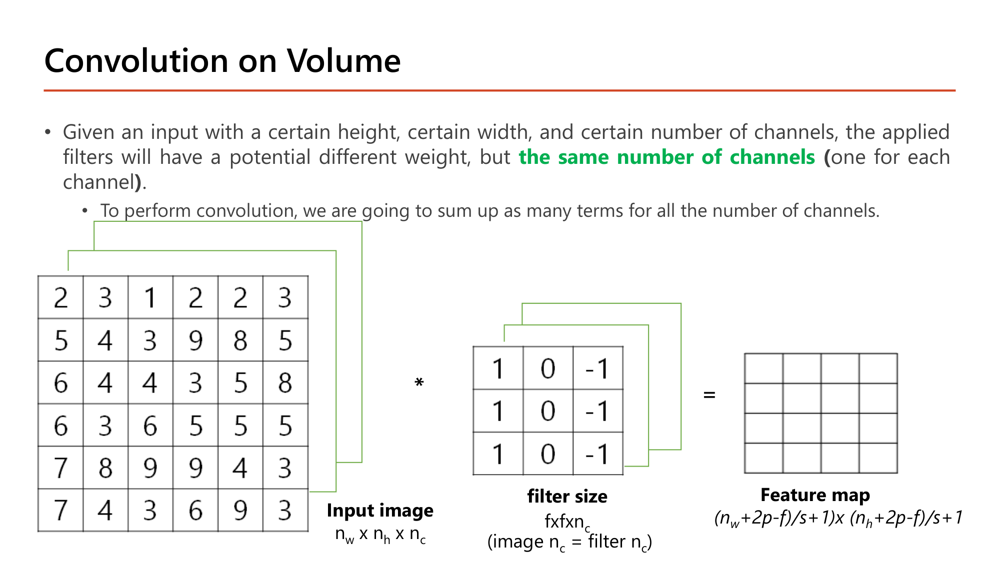
Slide: Convolution on Volume — filter ต้องมี channel เท่า input (Lecture7, p.14)
ภาพสีมี 3 channel. filter ที่ใช้กับ input หลาย channel ต้องมี the same number of channels กับ input (หนึ่งชั้นต่อหนึ่ง channel) โดยแต่ละชั้นมี weight ต่างกันได้. filter จึงมีขนาด \(f \times f \times n_C\). การคำนวณหนึ่งตำแหน่งคือคูณและบวกทุกช่องของทุก channel รวมกันเป็นตัวเลขเดียว .
ภาพ 6×6×3 กับ filter 3×3×3: หนึ่งตำแหน่งมีการคูณ \(3 \times 3 \times 3 = 27\) ครั้ง แล้วบวกเป็น 1 ค่า
Feature map ที่ได้จาก filter หนึ่งตัวมี 1 channel ขนาด \(4 \times 4\) ไม่ใช่ 4×4×3
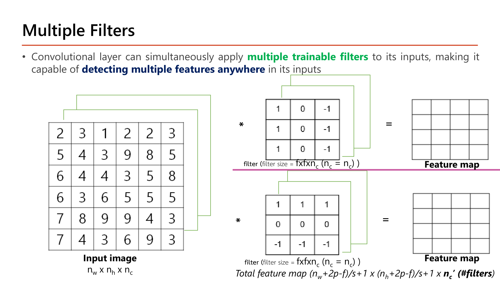
Slide: Multiple Filters — จำนวน filter คือจำนวน channel ของ output (Lecture7, p.15)
Convolutional layer ใช้ multiple trainable filters พร้อมกันได้ จึง detecting multiple features anywhere ใน input. filter แต่ละตัวให้ feature map 1 แผ่น. เมื่อนำมาซ้อนกันจะได้ output
$$\begin{gathered}\left(\left\lfloor\frac{n_W + 2p - f}{s}\right\rfloor + 1\right) \times \left(\left\lfloor\frac{n_H + 2p - f}{s}\right\rfloor + 1\right)\\ \times\; n_C'\end{gathered}$$
กว้างและสูงมาจากสูตรเดิม ส่วน channel ของ output เท่ากับจำนวน filter ไม่เกี่ยวกับ channel ของ input
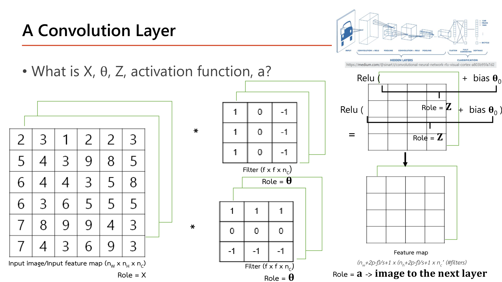
Slide: A Convolution Layer — จับคู่กับ X, θ, Z, a ของ dense layer (Lecture7, p.16)
Convolution layer มีส่วนประกอบเดียวกับ dense layer ของ Lesson 2 ทุกตัว:
บทบาท Dense layer Convolution layer \(X\) (หรือ \(a^{[l-1]}\)) vector ของ input ภาพ หรือ feature map ของ layer ก่อนหน้า (\(n_W \times n_H \times n_C\)) \(\theta\) weight matrix filter แต่ละตัว (\(f \times f \times n_C\)) \(\theta_0\) bias 1 ตัวต่อ node bias 1 ตัวต่อ filter \(Z\) \(\theta X + \theta_0\) ผล convolution + bias \(\theta_0\) \(a\) \(g(Z)\) \(\text{ReLU}(Z)\) ⇒ feature map ที่เป็น "image to the next layer"
คำนวณ: จำนวน parameter ของ convolution layer
ให้ layer มี \(n_C'\) filter ขนาด \(f \times f\) รับ input ที่มี \(n_C\) channel
ขั้นที่ 1 — weight ของ filter หนึ่งตัว
$$f \times f \times n_C$$ขั้นที่ 2 — บวก bias 1 ตัวต่อ filter แล้วคูณจำนวน filter
$$\#\text{param} = (f \times f \times n_C + 1) \times n_C'$$ขั้นที่ 3 — ตัวอย่าง: 10 filter ขนาด 3×3 บนภาพสี
$$(3 \times 3 \times 3 + 1) \times 10 = 28 \times 10 = 280$$ขั้นที่ 4 — ตัวอย่าง: 20 filter ขนาด 5×5 บน input 10 channel
$$(5 \times 5 \times 10 + 1) \times 20 = 251 \times 20 = 5{,}020$$
สูตรไม่มี \(n_W, n_H, p, s\). ขนาดภาพ padding และ stride เปลี่ยนขนาด output แต่ไม่เปลี่ยนจำนวน parameter. ตัวที่ลืมบ่อยคือ \(n_C\) ของ input (ไม่ใช่ของภาพต้นฉบับ) และ +1 ของ bias.
คำถาม 5 Parameters
Convolution layer มี 16 filter ขนาด 3×3 รับ input ขนาด 14×14×8 และใช้ padding แบบ same จำนวน parameter ที่เรียนได้ของ layer นี้คือเท่าใด?
1,152
1,168
160
3,136
คำถาม 6 Output shape
Input ขนาด 32×32×3 ผ่าน convolution layer ที่มี 8 filter ขนาด 5×5, padding 0, stride 1 shape ของ output คือข้อใด?
28×28×3
28×28×24
32×32×8
28×28×8
ออกสอบสูง — ข้อความที่อาจารย์ทำสี
filter ต้องมี the same number of channels กับ input (image \(n_C\) = filter \(n_C\)). กับดัก: ตัวเลือกที่ให้ filter 3×3×1 กับภาพ RGB
layer หนึ่งใช้ multiple trainable filters ⇒ detecting multiple features anywhere . channel ของ output = จำนวน filter (\(n_C'\))
บทบาท: input = \(X\), filter = \(\theta\), ผล convolution + bias = \(Z\), ReLU(\(Z\)) = \(a\)
\(\#\text{param} = (f \cdot f \cdot n_C + 1) \cdot n_C'\)
6. Pooling Layer และ Translation Invariance
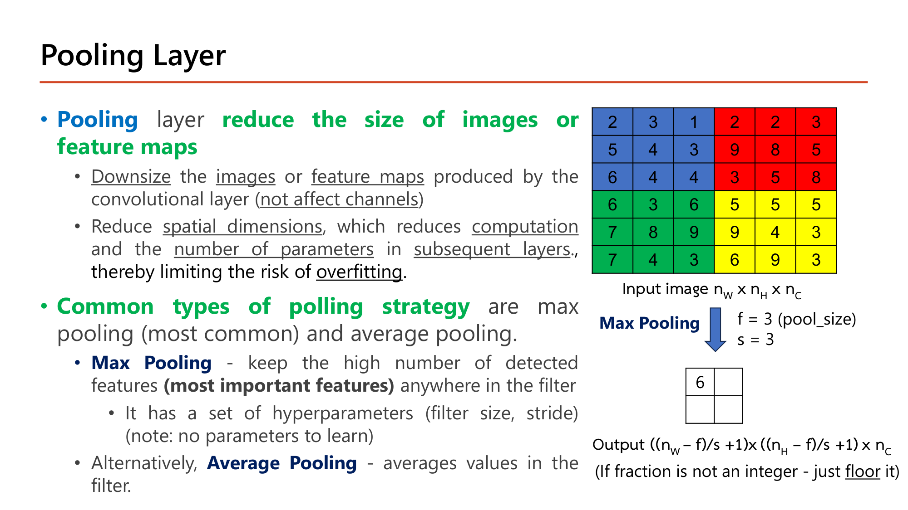
Slide: Pooling Layer — ย่อ feature map โดยไม่มี parameter (Lecture7, p.18)
Pooling layer ทำหน้าที่ reduce the size of images or feature maps :
Downsize ภาพหรือ feature map ที่ convolutional layer ผลิต โดยไม่กระทบจำนวน channel (not affect channels)
ลด spatial dimensions จึงลด computation และ number of parameters ใน subsequent layers ซึ่งจำกัดความเสี่ยง overfitting
Common types of polling strategy มีสองแบบ:
Max Pooling (ใช้บ่อยที่สุด): เก็บค่าสูงสุดในหน้าต่าง = feature ที่เด่นที่สุด (most important features) ไม่ว่าอยู่ตรงไหนในหน้าต่าง. มีเฉพาะ hyperparameter (filter size, stride) และ no parameters to learn Average Pooling : เฉลี่ยค่าในหน้าต่าง
$$\begin{gathered}\text{Output} = \left(\left\lfloor\frac{n_W - f}{s}\right\rfloor + 1\right) \times \left(\left\lfloor\frac{n_H - f}{s}\right\rfloor + 1\right)\\ \times\; n_C\end{gathered}$$
คำนวณตามสไลด์: max pooling และ average pooling (f = 3, s = 3) บนภาพ 6×6
ให้ ภาพ 6×6 ชุดเดิม แบ่งเป็น 4 บล็อก 3×3 ที่ไม่ซ้อนกัน. บล็อกซ้ายบน \(\{2,3,1,5,4,3,6,4,4\}\), ขวาบน \(\{2,2,3,9,8,5,3,5,8\}\), ซ้ายล่าง \(\{6,3,6,7,8,9,7,4,3\}\), ขวาล่าง \(\{5,5,5,9,4,3,6,9,3\}\)
ขั้นที่ 1 — ขนาด output
$$\left\lfloor \frac{6-3}{3} \right\rfloor + 1 = 2 \quad\Rightarrow\quad 2 \times 2$$ขั้นที่ 2 — Max pooling: เลือกค่ามากสุดของแต่ละบล็อก
$$\begin{bmatrix} \max = 6 & \max = 9\\ \max = 9 & \max = 9 \end{bmatrix}$$ขั้นที่ 3 — Average pooling: ผลรวมของแต่ละบล็อกหาร 9
$$\begin{bmatrix} 32/9 & 45/9\\ 53/9 & 49/9 \end{bmatrix} \approx \begin{bmatrix} 3.56 & 5.00\\ 5.89 & 5.44 \end{bmatrix}$$
สไลด์เติมไว้ช่องเดียวคือ 6 (ซ้ายบน). สามช่องที่เหลือของ max pooling เป็น 9 ทั้งหมด. ข้อมูล 36 ค่าเหลือ 4 ค่า และไม่มี weight ให้เรียนเลย.
Slide: Max Pooling Introduce Translation Invariant — ภาพ A, B, C (Lecture7, p.19)
ภาพที่เลื่อนไปไม่กี่ pixel ควรให้ feature ใกล้เคียงเดิม เรียกว่า invariance to small translations . ตัวอย่างในสไลด์: ภาพ A, B, C ผ่าน max pooling ที่ใช้ kernel 2×2 stride 2. B คือ A เลื่อนขวา 1 pixel, C คือ A เลื่อนขวา 2 pixel.
Output ของ A และ B เหมือนกันทุกช่อง . การเลื่อน 1 pixel ยังอยู่ในหน้าต่าง 2×2 เดิม ค่าสูงสุดของหน้าต่างจึงไม่เปลี่ยน. นี่คือความหมายของ translation invariance
Output ของ C ต่างออกไป: เลื่อนขวา 1 ช่อง. การเลื่อน 2 pixel ข้ามไปอยู่หน้าต่างถัดไป. สไลด์ระบุว่ายังมี invariance 75%
ข้อสรุปของสไลด์: ใส่ max pooling ทุกสองสาม layer ทำให้ได้ translation invariance ระดับหนึ่งในสเกลที่ใหญ่ขึ้น. invariance นี้มีประโยชน์กับงานที่คำตอบไม่ควรขึ้นกับตำแหน่งละเอียด เช่น classification.
คำถาม 7 Pooling
Feature map ขนาด 4×4 มีแถว [1,3,2,0], [4,2,1,5], [0,1,7,2], [3,6,1,4] ผ่าน max pooling ที่ใช้ pool size 2 และ stride 2 ผลลัพธ์คือข้อใด?
[[4,2],[3,7]]
[[3,2],[6,7]]
[[4,5],[6,7]]
[[2.5,2],[2.5,3.5]]
คำถาม 8 Pooling
Feature map ขนาด 15×15×20 ผ่าน max pooling ที่ใช้ pool size 2 และ stride 2 shape ของ output และจำนวน parameter ที่เรียนได้ของ layer นี้คือข้อใด?
7×7×20 และ 0 parameter
8×8×20 และ 0 parameter
7×7×10 และ 0 parameter
7×7×20 และ 80 parameter
ออกสอบสูง — ข้อความที่อาจารย์ทำสี
Pooling ⇒ reduce the size of images or feature maps . ลดเฉพาะกว้างกับสูง ไม่ลด channel Common types of polling strategy : Max Pooling (most common, เก็บ most important features) และ Average Pooling Pooling มี hyperparameter (filter size, stride) แต่ ไม่มี parameter ให้เรียน ⇒ #Parameters = 0 เสมอ
Max pooling ให้ invariance to small translations : เลื่อน 1 pixel output เท่าเดิม, เลื่อน 2 pixel output เลื่อน 1 ช่อง (kernel 2×2, stride 2)
7. ประกอบเป็น CNN และตาราง Parameters Summary
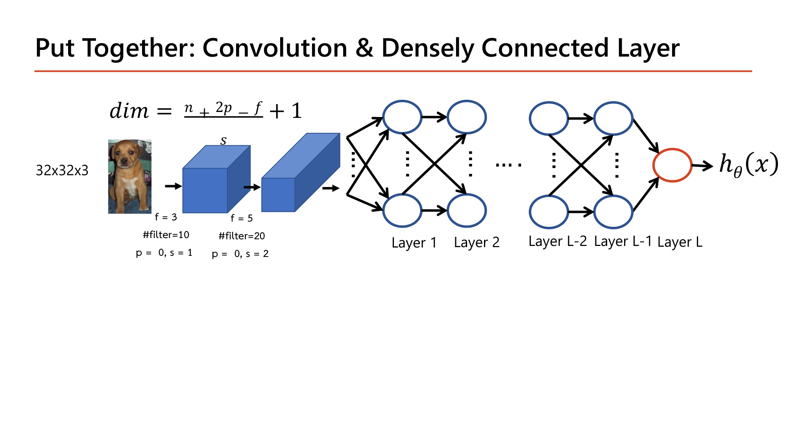
Slide: Put Together: Convolution & Densely Connected Layer — ยังไม่มี pooling (Lecture7, p.17)
หน้า 17 ต่อ convolution สองชั้นเข้ากับ dense layer โดยยังไม่มี pooling. ภาพ 32×32×3 ผ่านชั้นแรก (f = 3, 10 filter, p = 0, s = 1) ได้ \(32 - 3 + 1 = 30\) คือ 30×30×10. ชั้นที่สอง (f = 5, 20 filter, p = 0, s = 2) ได้ \(\lfloor (30-5)/2 \rfloor + 1 = \lfloor 12.5 \rfloor + 1 = 13\) คือ 13×13×20. เมื่อ flatten จะได้ vector ยาว \(13 \times 13 \times 20 = 3{,}380\).
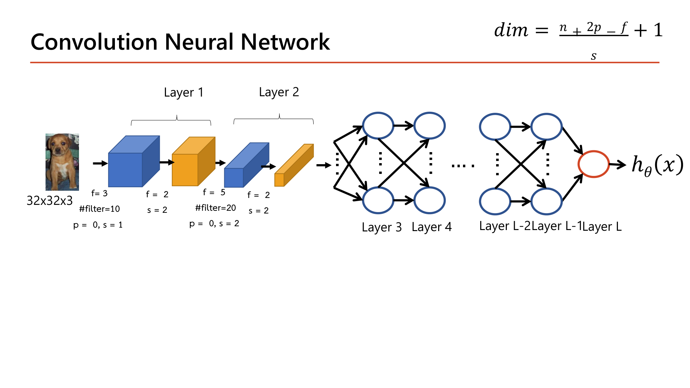
Slide: Convolution Neural Network — เพิ่ม pooling หลัง convolution แต่ละชั้น (Lecture7, p.20)
หน้า 20 เพิ่ม max pooling (f = 2, s = 2) หลัง convolution แต่ละชั้น. สไลด์นับ convolution + pooling คู่หนึ่งเป็น 1 layer (Layer 1, Layer 2) เพราะ pooling ไม่มี parameter. dense layer จึงเริ่มที่ Layer 3.
Slide: Parameters Summary — ตารางที่ต้องคำนวณได้ทุกช่อง (Lecture7, p.21)
คำนวณตามสไลด์: ทุกแถวของตาราง Parameters Summary
ให้ input 32×32×3 และ network ตามหน้า 20. Activation size = ผลคูณของ activation shape
ขั้นที่ 1 — Input
$$32 \times 32 \times 3 = 3{,}072 \text{ ค่า},\quad 0 \text{ parameter}$$ขั้นที่ 2 — Layer 1 Conv (f = 3, 10 filter, p = 0, s = 1)
$$\begin{gathered}\frac{32 + 0 - 3}{1} + 1 = 30 \;\Rightarrow\; 30 \times 30 \times 10 = 9{,}000 \\[0.35em] \#\text{param} = (3 \cdot 3 \cdot 3 + 1) \cdot 10 = 280\end{gathered}$$ขั้นที่ 3 — Layer 1 Pooling (f = 2, s = 2)
$$\begin{gathered}\frac{30 - 2}{2} + 1 = 15 \;\Rightarrow\; 15 \times 15 \times 10 = 2{,}250 \\[0.35em] \#\text{param} = 0\end{gathered}$$ขั้นที่ 4 — Layer 2 Conv (f = 5, 20 filter, p = 0, s = 2): input มี 10 channel
$$\begin{gathered}\frac{15 - 5}{2} + 1 = 6 \;\Rightarrow\; 6 \times 6 \times 20 = 720 \\[0.35em] \#\text{param} = (5 \cdot 5 \cdot 10 + 1) \cdot 20 = 5{,}020\end{gathered}$$ขั้นที่ 5 — Layer 2 Pooling (f = 2, s = 2)
$$\frac{6 - 2}{2} + 1 = 3 \;\Rightarrow\; 3 \times 3 \times 20 = 180 \qquad \#\text{param} = 0$$ขั้นที่ 6 — Flatten แล้วเข้า Layer 3 (Fully Connected 100 node)
$$180 \times 100 + 100 = 18{,}100$$ขั้นที่ 7 — Layer 4 (Fully Connected 100 node) และ output sigmoid 1 node
$$100 \times 100 + 100 = 10{,}100 \qquad 100 \times 1 + 1 = 101$$ขั้นที่ 8 — รวม
$$280 + 0 + 5{,}020 + 0 + 18{,}100 + 10{,}100 + 101 = 33{,}601$$
ทุกค่าตรงกับตารางในสไลด์ และผลรวม 33,601 ตรงกับ Total params ของ model.summary() หน้า 27. ชั้น convolution ทั้งสองมี parameter รวม 5,300 ตัว (16%) ส่วน dense layer มี 28,301 ตัว (84%).
หมายเหตุใต้ตาราง: เมื่อ CNN ลึกขึ้น height and width จะ decrease ส่วน number of channels จะ increase . ในตารางนี้ด้านกว้างเดินเป็น 32 → 30 → 15 → 6 → 3 และ channel เดินเป็น 3 → 10 → 20.
คำนวณ: pooling ลด parameter ของ dense layer ได้เท่าไร (หน้า 17 เทียบหน้า 20)
ให้ network สองแบบ ต่างกันเฉพาะการมี pooling. Dense layer แรกมี 100 node
ขั้นที่ 1 — ไม่มี pooling (หน้า 17): flatten ได้ 13×13×20 = 3,380
$$3{,}380 \times 100 + 100 = 338{,}100$$ขั้นที่ 2 — มี pooling (หน้า 20): flatten ได้ 3×3×20 = 180
$$180 \times 100 + 100 = 18{,}100$$ขั้นที่ 3 — อัตราส่วน
$$\frac{338{,}100}{18{,}100} \approx 18.7$$
Pooling ไม่มี parameter ของตัวเอง แต่ลด parameter ของ layer ถัดไปราว 18.7 เท่า ตรงกับข้อความหน้า 18 ที่ว่า pooling ลด "number of parameters in subsequent layers".
คำถาม 9 Parameter table
ภาพ 28×28×1 ผ่าน Conv (6 filter, f=5, p=0, s=1) → MaxPool (f=2, s=2) → Conv (16 filter, f=5, p=0, s=1) → MaxPool (f=2, s=2) → Flatten จำนวนค่าใน vector หลัง flatten คือเท่าใด?
400
1,024
256
64
คำถาม 10 Parameter table
จาก network เดียวกัน (ภาพ 28×28×1 → Conv 6 filter f=5 → MaxPool → Conv 16 filter f=5 → MaxPool) convolution layer ชั้นที่สองมี parameter ที่เรียนได้กี่ตัว?
416
2,400
6,416
2,416
ออกสอบสูง — ข้อความที่อาจารย์ทำสี
ลึกขึ้น ⇒ height and width decrease , number of channels increase
ลำดับคิดทุกแถว: (1) ขนาดจาก \(\lfloor (n+2p-f)/s \rfloor + 1\) (2) channel = จำนวน filter (pooling คง channel เดิม) (3) parameter ของ conv = \((f \cdot f \cdot n_C + 1) \cdot n_C'\), ของ pooling = 0, ของ dense = \(n_{in} \cdot n_{out} + n_{out}\)
\(n_C\) ของ conv ชั้นถัดไป = จำนวน filter ของ conv ชั้นก่อนหน้า (pooling ไม่เปลี่ยน)
\(n_{in}\) ของ dense layer แรก = ผลคูณ shape หลัง pooling ชั้นสุดท้าย (flatten)
8. ทำไมต้อง ConvNets
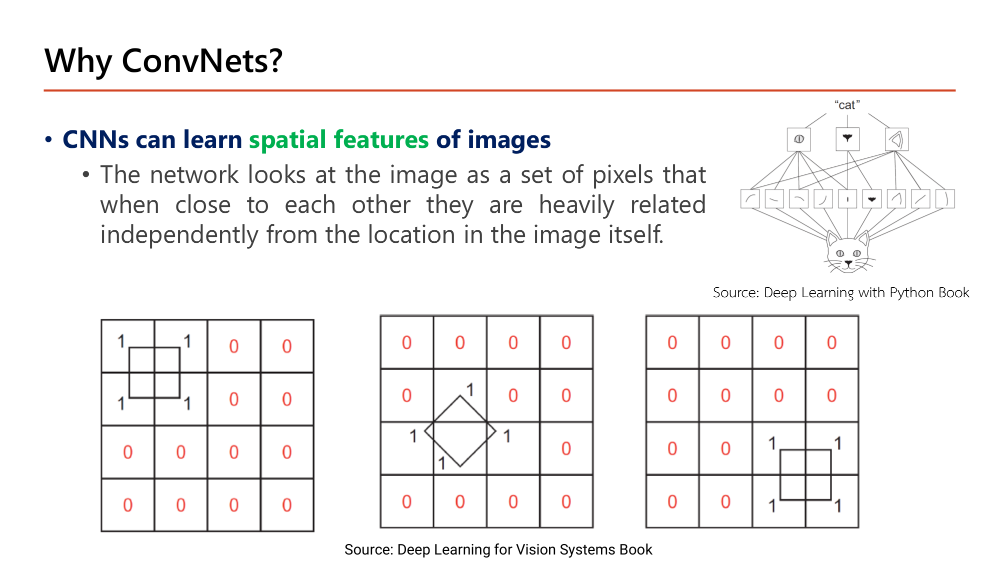
Slide: Why ConvNets? — เรียน spatial features (Lecture7, p.22)
CNNs can learn spatial features of images . network มองภาพเป็นกลุ่ม pixel ที่ถ้าอยู่ใกล้กันจะสัมพันธ์กันมาก โดยไม่ขึ้นกับตำแหน่งในภาพ . ตารางสามรูปเดิมจากหน้า 4 กลับมาอีกครั้ง: filter ตัวเดียวที่ตรวจมุมของสี่เหลี่ยมถูกเลื่อนไปทั่วภาพ จึงพบสี่เหลี่ยมได้ทั้งมุมซ้ายบน กลางภาพ และมุมขวาล่าง. ปัญหาข้อ 2 ของ dense network (§1) จึงหมดไป.
Slide: Why ConvNets? (2) — locally connected และ weight sharing (Lecture7, p.23)
CNN ประกอบด้วย locally connected layers ซึ่งใช้ fewer parameters เมื่อเทียบกับ fully connected layer จึงคำนวณน้อยกว่าและ overfit ยากกว่า. มีสองกลไกที่ทำให้ parameter น้อย:
Local connectivity (sparse connection): ค่า 5 ที่มุมซ้ายบนของ feature map ขึ้นกับ input เพียง 9 ช่องในกรอบ 3×3 เท่านั้น pixel อื่นอีก 27 ช่องไม่มีผลต่อค่านี้Weight sharing: neuron ทุกตัวใน feature map เดียวกันใช้ parameter ชุดเดียวกัน. feature map 4×4 มี 16 ค่า แต่ทั้ง 16 ค่าคำนวณจาก weight 9 ตัวและ bias 1 ตัวชุดเดียว: \(3 \times 3 + 1 = 10\) parameter ต่อ filter
คำนวณ: dense เทียบกับ convolution สำหรับ output 16 ค่าจากภาพ 6×6
ให้ input 6×6 = 36 ค่า ต้องการ output 16 ค่า (เท่ากับ feature map 4×4)
ขั้นที่ 1 — Dense layer 16 node
$$36 \times 16 + 16 = 592$$ขั้นที่ 2 — Locally connected แต่ไม่แชร์ weight (16 node, node ละ 9 weight + 1 bias)
$$16 \times (9 + 1) = 160$$ขั้นที่ 3 — Convolution (แชร์ weight): filter 3×3 หนึ่งตัว
$$3 \times 3 + 1 = 10$$
592 → 160 จาก local connectivity และ 160 → 10 จาก weight sharing. รวมแล้วลดลง 59 เท่าในตัวอย่างเล็กนี้.
ออกสอบสูง — ข้อความที่อาจารย์ทำสี
CNNs can learn spatial features of images : pixel ใกล้กันสัมพันธ์กัน ไม่ขึ้นกับตำแหน่งในภาพConvolutional layer ใช้ fewer parameters กว่า fully connected ⇒ less computation, less prone to overfitting
สองคำที่ต้องแยก: locally connected (แต่ละ output ขึ้นกับ input บริเวณเล็ก) และ weight sharing (ทุกตำแหน่งใช้ filter ชุดเดียว)
9. Design Patterns และ Hyperparameter ของ CNN
Slide: Classical Design Patterns in CNN Architectures (Lecture7, p.24)
Convnet แบบ classical มีสองส่วน:
ส่วน feature extraction : ซ้อน convolutional layer สองสามชั้น (แต่ละชั้นตามด้วย ReLU) แล้ว pooling layer แล้ว convolutional layer อีกชุด แล้ว pooling อีก. นิยมจัดกลุ่ม convolutional layer 1–3 ชั้นต่อ pooling 1 ชั้น
ส่วน classification : fully-connected layer จำนวนไม่มาก (+ReLU) และ layer สุดท้ายให้ผลทำนาย
ระหว่างเดินผ่าน network image gets smaller and smaller แต่ deeper and deeper (มี feature map มากขึ้น). จำนวน filter โตตามความลึก และมักเพิ่มเป็นสองเท่า (เช่น 32 → 64 → 128).
ตัวอย่างในรูปของสไลด์ตรวจด้วยสูตรได้ทั้งหมด: input 28×28 ผ่าน convolution kernel 5×5 ได้ \(28-5+1 = 24\); max pooling 2×2 ได้ 12; convolution 5×5 ได้ \(12-5+1 = 8\); max pooling 2×2 ได้ 4; จากนั้น flatten เข้า fully connected และ softmax 10 class.
Slide: Modern Design Patterns in CNN Architectures — ResNet-34 (Lecture7, p.25)
รุ่น ลำดับตามสไลด์ Classical CNN Conv/Pool → Flatten → Dense Modern CNN มักเป็น Conv blocks → Global Average Pooling → classifier
รูป ResNet-34 ในสไลด์เริ่มด้วย convolution 7×7 (64 filter, stride 2) และ max pool 3×3 (stride 2) หนึ่งครั้ง จากนั้นเป็น convolution 3×3 ต่อกันยาว. จุดที่จำนวน filter เพิ่มจาก 64 เป็น 128 ใช้ convolution stride 2 ย่อขนาดแทน pooling. ท้าย network คือ global average pool → fully connected 1000 units → softmax. หมายเหตุของสไลด์: CNN รุ่นใหม่ (เช่น ResNets) use pooling minimally or not at all . รายละเอียด residual unit อยู่ใน Lesson 8 .
คำนวณ: Flatten เทียบกับ Global Average Pooling
ให้ feature map สุดท้ายขนาด 7×7×512 ต่อกับ dense layer 1,000 node
ขั้นที่ 1 — Flatten: ทุกค่ากลายเป็น input
$$\begin{gathered}7 \times 7 \times 512 = 25{,}088 \\[0.35em] \Rightarrow\; 25{,}088 \times 1{,}000 + 1{,}000 = 25{,}089{,}000\end{gathered}$$ขั้นที่ 2 — Global Average Pooling: เฉลี่ย 49 ค่าของแต่ละ channel เหลือ 1 ค่า
$$512 \quad\Rightarrow\quad 512 \times 1{,}000 + 1{,}000 = 513{,}000$$
Global Average Pooling ลด parameter ของ classifier ลง 49 เท่า (เท่ากับ 7×7) และตัว GAP เองไม่มี parameter.
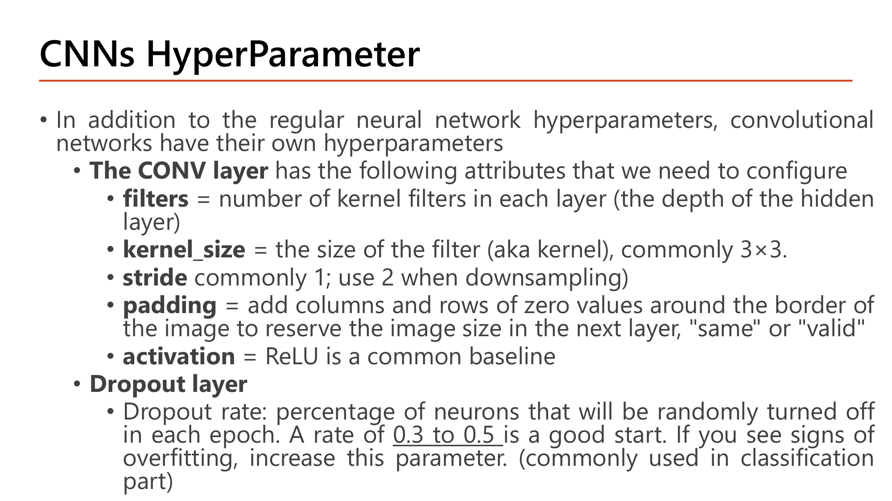
Slide: CNNs HyperParameter — อาร์กิวเมนต์ของ Conv2D และ Dropout (Lecture7, p.26)
นอกจาก hyperparameter ทั่วไปของ neural network (Lesson 6 ) CNN มีของตัวเอง:
Hyperparameter ความหมายตามสไลด์ ค่าที่ใช้บ่อย filtersจำนวน kernel filter ของ layer (= depth ของ hidden layer) 32, 64, 128 (เพิ่มสองเท่าตามความลึก) kernel_sizeขนาดของ filter 3×3 stridesก้าวของ filter 1; ใช้ 2 เมื่อต้องการ downsampling paddingเติมแถวและคอลัมน์ศูนย์รอบขอบเพื่อรักษาขนาดภาพใน layer ถัดไป "same" หรือ "valid"activationactivation หลัง convolution ReLU เป็น baseline Dropout rate สัดส่วน neuron ที่ถูกสุ่มปิด เริ่มที่ 0.3 ถึง 0.5 ; ถ้าเห็น overfitting ให้เพิ่ม. นิยมใช้ในส่วน classification
คำถาม 11 Design pattern
ข้อใดอธิบายการเปลี่ยนแปลงของ feature map เมื่อเดินลึกเข้าไปใน CNN แบบ classical ได้ถูกต้อง?
กว้างและสูงเพิ่มขึ้น ส่วนจำนวน channel ลดลง
กว้างและสูงลดลง ส่วนจำนวน channel เพิ่มขึ้น
กว้างและสูงลดลง และจำนวน channel ลดลงด้วย
กว้างและสูงคงเดิม ส่วนจำนวน channel เพิ่มขึ้น
คำถาม 12 Design pattern
Feature map สุดท้ายของ CNN มีขนาด 5×5×256 ถ้าเปลี่ยนจาก Flatten เป็น Global Average Pooling ก่อน dense layer จำนวน input ของ dense layer จะเปลี่ยนจากเท่าใดเป็นเท่าใด?
จาก 6,400 เป็น 25
จาก 1,280 เป็น 256
จาก 6,400 เป็น 1,280
จาก 6,400 เป็น 256
ออกสอบสูง — ข้อความที่อาจารย์ทำสี
CNN สองส่วน: feature extraction (Conv+ReLU, Pooling ซ้ำๆ) และ classification (fully connected ไม่กี่ชั้น)
image gets smaller and smaller แต่ deeper and deeper ; จำนวน filter มักเพิ่มสองเท่าClassical: Conv/Pool → Flatten → Dense. Modern: Conv blocks → Global Average Pooling → classifier และใช้ pooling น้อยมากหรือไม่ใช้เลย
ค่าที่ใช้บ่อย: kernel_size 3×3, stride 1 (2 เมื่อ downsampling), activation ReLU, dropout 0.3–0.5 ในส่วน classification
10. เขียน CNN ด้วย Keras
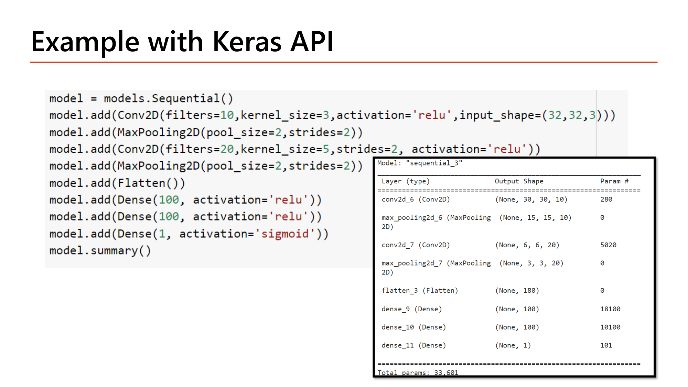
Slide: Example with Keras API — โค้ดของ network ในตารางหน้า 21 (Lecture7, p.27)
โค้ดหน้า 27 คือ network ของหน้า 20–21 ทุกชั้น. model.summary() ให้ตัวเลขชุดเดียวกับที่คำนวณมือใน §7.
model = models.Sequential()
model.add(Conv2D(filters=10,kernel_size=3,activation='relu',input_shape=(32,32,3)))
model.add(MaxPooling2D(pool_size=2,strides=2))
model.add(Conv2D(filters=20,kernel_size=5,strides=2, activation='relu'))
model.add(MaxPooling2D(pool_size=2,strides=2))
model.add(Flatten())
model.add(Dense(100, activation='relu'))
model.add(Dense(100, activation='relu'))
model.add(Dense(1, activation='sigmoid'))
model.summary()
โค้ด ทำอะไร Conv2D(filters=10, kernel_size=3, activation='relu', input_shape=(32,32,3)) 10 filter ขนาด 3×3. ไม่ระบุ strides ⇒ 1; ไม่ระบุ padding ⇒ 'valid'. input_shape คือ (สูง, กว้าง, channel) ไม่รวม batch. Output (None, 30, 30, 10), 280 parameter MaxPooling2D(pool_size=2, strides=2) หน้าต่าง 2×2 ก้าวทีละ 2. Output (None, 15, 15, 10), 0 parameter. ถ้าไม่ระบุ strides Keras ใช้ค่าเท่ากับ pool_size Conv2D(filters=20, kernel_size=5, strides=2, activation='relu') 20 filter ขนาด 5×5 stride 2. Output (None, 6, 6, 20), 5,020 parameter MaxPooling2D(pool_size=2, strides=2) Output (None, 3, 3, 20), 0 parameter Flatten() แปลง 3×3×20 เป็น vector 180 ค่า. Output (None, 180), 0 parameter Dense(100, activation='relu') 180·100 + 100 = 18,100 parameter Dense(100, activation='relu') 100·100 + 100 = 10,100 parameter Dense(1, activation='sigmoid') output สำหรับ binary classification, 101 parameter model.summary() พิมพ์ Output Shape และ Param # ของทุกชั้น. None ตัวแรกคือ batch size ที่ยังไม่กำหนด. Total params: 33,601
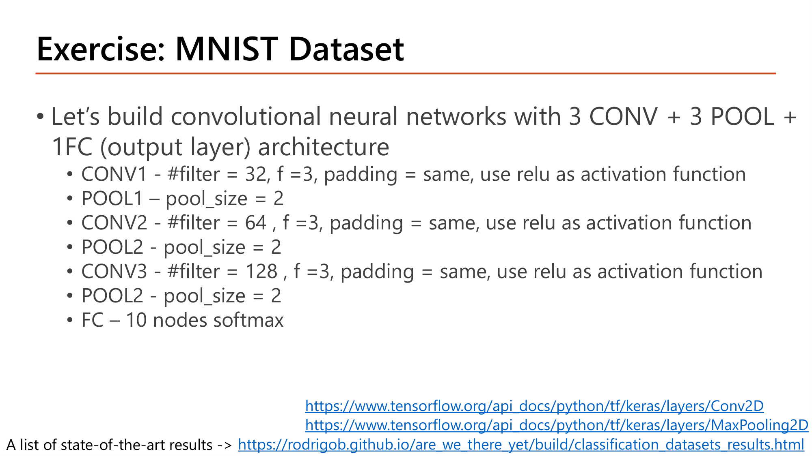
Slide: Exercise: MNIST Dataset — 3 CONV + 3 POOL + 1 FC (Lecture7, p.28)
แบบฝึกหัดหน้า 28 กำหนดสถาปัตยกรรม 3 CONV + 3 POOL + 1 FC สำหรับ MNIST (ภาพ 28×28×1, 10 class). ทุก CONV ใช้ f = 3, padding = same, ReLU และจำนวน filter เพิ่มสองเท่า 32 → 64 → 128. (สไลด์พิมพ์ POOL ตัวที่สามว่า "POOL2" ซึ่งหมายถึง POOL3.) โค้ดที่ตรงกับ spec:
model = models.Sequential()
model.add(Conv2D(32, kernel_size=3, activation='relu', padding='SAME', input_shape=(28, 28, 1)))
model.add(MaxPooling2D(pool_size=(2, 2)))
model.add(Conv2D(64, kernel_size=3, activation='relu', padding='SAME'))
model.add(MaxPooling2D(pool_size=(2, 2)))
model.add(Conv2D(128, kernel_size=3, activation='relu', padding='SAME'))
model.add(MaxPooling2D(pool_size=(2, 2)))
model.add(Flatten())
model.add(Dense(10, activation='softmax'))
model.summary()
โค้ด ทำอะไร X = X.reshape(60000, 28, 28, 1) (ขั้นเตรียมข้อมูลก่อนสร้างโมเดล) CNN ต้องการ input 4 มิติ (batch, สูง, กว้าง, channel). MNIST โหลดมาเป็น (60000, 28, 28) จึงต้องเพิ่มมิติ channel = 1. ต่างจาก Lesson 5 ที่ reshape เป็น (60000, 784) Conv2D(32, kernel_size=3, activation='relu', padding='SAME', input_shape=(28, 28, 1)) อาร์กิวเมนต์ตัวแรกคือ filters. padding same ⇒ ขนาดคงเดิม 28×28×32 MaxPooling2D(pool_size=(2, 2)) ไม่ระบุ strides ⇒ เท่ากับ pool_size = 2. ขนาดลดครึ่ง Flatten() แปลง feature map สุดท้ายเป็น vector ก่อนเข้า dense Dense(10, activation='softmax') 10 class ⇒ 10 node + softmax. ใช้คู่กับ loss sparse_categorical_crossentropy เมื่อ label เป็นจำนวนเต็ม 0–9
คำนวณ: shape และ parameter ของ CNN ในแบบฝึกหัด MNIST
ให้ input 28×28×1. CONV ทุกชั้น f = 3, padding same, stride 1. POOL ทุกชั้น pool size 2, stride 2
ขั้นที่ 1 — CONV1 (32 filter) และ POOL1
$$\begin{gathered}28 \times 28 \times 32,\quad (3 \cdot 3 \cdot 1 + 1) \cdot 32 = 320 \\[0.35em] \Rightarrow\; \lfloor (28-2)/2 \rfloor + 1 = 14 \;\Rightarrow\; 14 \times 14 \times 32\end{gathered}$$ขั้นที่ 2 — CONV2 (64 filter) และ POOL2
$$\begin{gathered}14 \times 14 \times 64,\quad (3 \cdot 3 \cdot 32 + 1) \cdot 64 = 18{,}496 \\[0.35em] \Rightarrow\; 7 \times 7 \times 64\end{gathered}$$ขั้นที่ 3 — CONV3 (128 filter) และ POOL3
$$\begin{gathered}7 \times 7 \times 128,\quad (3 \cdot 3 \cdot 64 + 1) \cdot 128 = 73{,}856 \\[0.35em] \Rightarrow\; \lfloor (7-2)/2 \rfloor + 1 = 3 \;\Rightarrow\; 3 \times 3 \times 128\end{gathered}$$ขั้นที่ 4 — Flatten และ FC 10 node
$$3 \times 3 \times 128 = 1{,}152 \qquad 1{,}152 \times 10 + 10 = 11{,}530$$ขั้นที่ 5 — รวม
$$320 + 18{,}496 + 73{,}856 + 11{,}530 = 104{,}202$$
Total params = 104,202 ตรงกับ model.summary() ของโมเดลนี้. จุดที่ต้องระวังคือ POOL3: \((7-2)/2 = 2.5\) ปัดลงเป็น 2 แล้วบวก 1 ได้ 3 ไม่ใช่ 3.5 หรือ 4. เทียบกับ dense network 784 → 16 → 16 → 10 ของ Lesson 5 ที่มี 13,002 parameter โมเดลนี้ใหญ่กว่า 8 เท่า และให้ test accuracy ราว 0.99.
คำถาม 13 Keras code
โค้ด Conv2D(64, kernel_size=3, activation='relu') รับ input ขนาด (None, 20, 20, 32) โดยไม่ระบุ padding และ strides output shape คือข้อใด?
(None, 18, 18, 64)
(None, 20, 20, 64)
(None, 18, 18, 32)
(None, 10, 10, 64)
คำถาม 14 Keras code
ต้องการเติมโค้ดให้ layer ย่อ feature map จาก 14×14×32 เป็น 7×7×32 โดยไม่มี parameter ที่เรียนได้ ข้อใดถูกต้อง?
Conv2D(32, 2, strides=2)
Dense(7, activation='relu')
MaxPooling2D(pool_size=(2, 2))
UpSampling2D(size=(2, 2))
11. Data Augmentation
Slide: Data Augmentation — นิยามและข้อจำกัด (Lecture7, p.29)
Data augmentation สร้าง training data เพิ่มจากตัวอย่างที่มีอยู่ด้วยการ augmenting the examples via a number of random transformations (หมุน, เลื่อน, ซูม, กลับด้าน). แนวคิดนี้ปรากฏครั้งแรกใน Lesson 4 ในฐานะวิธีลด overfitting. สไลด์ระบุสามข้อ:
มัน not permanently create and store a new dataset . การแปลงเกิด on the fly ขณะประมวลผลแต่ละ training batch. ภาพเดิมจึงถูกแปลงต่างกันทุก epoch และขนาด dataset บนดิสก์ไม่เปลี่ยน
ภาพที่โมเดลเห็นยัง still heavily intercorrelated with original images เพราะมาจากภาพต้นฉบับชุดเดิม. data augmentation อย่างเดียวจึง cannot completely get rid of overfitting
ไม่ได้เพิ่ม accuracy ของ CNN เสมอไป แต่เพิ่มบ่อย โดยเฉพาะกับ dataset ขนาดเล็ก
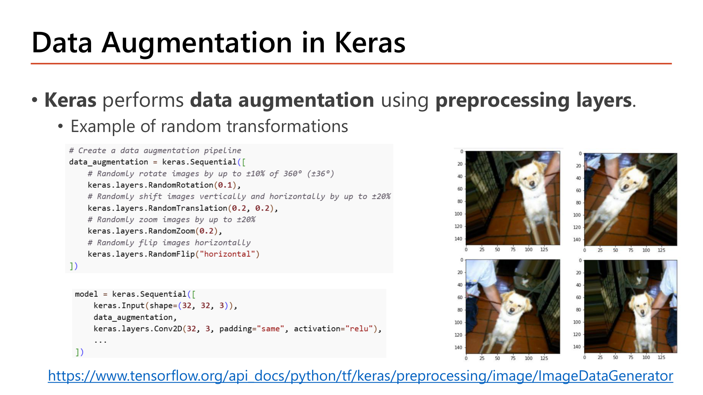
Slide: Data Augmentation in Keras — preprocessing layers (Lecture7, p.30)
Keras ทำ data augmentation ด้วย preprocessing layers ซึ่งวางเป็น layer แรกของโมเดล. ภาพสุนัขสี่ภาพในสไลด์คือภาพต้นฉบับภาพเดียวที่ผ่าน pipeline สี่ครั้ง ได้การหมุน เลื่อน และซูมต่างกันทุกครั้ง.
# Create a data augmentation pipeline
data_augmentation = keras.Sequential([
# Randomly rotate images by up to ±10% of 360° (±36°)
keras.layers.RandomRotation(0.1),
# Randomly shift images vertically and horizontally by up to ±20%
keras.layers.RandomTranslation(0.2, 0.2),
# Randomly zoom images by up to ±20%
keras.layers.RandomZoom(0.2),
# Randomly flip images horizontally
keras.layers.RandomFlip("horizontal")
])
model = keras.Sequential([
keras.Input(shape=(32, 32, 3)),
data_augmentation,
keras.layers.Conv2D(32, 3, padding="same", activation="relu"),
...
])
โค้ด ทำอะไร data_augmentation = keras.Sequential([...]) รวม preprocessing layer หลายตัวเป็น pipeline เดียวที่ใช้เหมือน layer หนึ่งชั้น keras.layers.RandomRotation(0.1) หมุนแบบสุ่มไม่เกิน ±10% ของ 360° = ±36°. ค่าเป็นสัดส่วนของรอบเต็ม ไม่ใช่องศา keras.layers.RandomTranslation(0.2, 0.2) เลื่อนแนวตั้งและแนวนอนแบบสุ่มไม่เกิน ±20% ของความสูงและความกว้าง. ภาพ 32×32 เลื่อนได้ไม่เกิน 0.2 × 32 = 6.4 pixel keras.layers.RandomZoom(0.2) ซูมเข้าหรือออกแบบสุ่มไม่เกิน ±20% keras.layers.RandomFlip("horizontal") สุ่มกลับภาพซ้าย-ขวา keras.Input(shape=(32, 32, 3)) ประกาศ shape ของ input (แบบที่ Keras 3 แนะนำแทน input_shape= ใน layer แรก) data_augmentation, วาง pipeline ก่อน Conv2D ชั้นแรก. layer กลุ่มนี้ทำงานเฉพาะตอน training; ตอน evaluate/predict ภาพผ่านไปโดยไม่ถูกแปลง keras.layers.Conv2D(32, 3, padding="same", activation="relu") ส่วน CNN ตามปกติ: 32 filter, kernel 3×3. Output 32×32×32, parameter (3·3·3+1)·32 = 896
กลไกที่ต้องอธิบายได้
ทำไมต้องมี
โมเดล overfit เมื่อเห็นตัวอย่างเดิมซ้ำทุก epoch จนจำได้. การแปลงแบบสุ่มทำให้ไม่มี epoch ใดเห็นภาพเดิมทุก pixel และสอนให้โมเดลทนต่อการหมุน/เลื่อน/ซูม.
เปลี่ยนแล้วเกิดอะไร
เพิ่มค่า factor ⇒ ภาพหลากหลายขึ้นแต่ถ้ามากเกินวัตถุอาจหลุดเฟรมหรือความหมายเปลี่ยน (กลับเลข 6 แนวตั้งกลายเป็นคล้าย 9). จำนวนตัวอย่างต่อ epoch ไม่เพิ่ม : dataset 2,000 ภาพยังคง 2,000 ภาพต่อ epoch.
เชื่อมกับ
Dropout และ L2 (Lesson 4) เป็น regularization ที่ตัวโมเดล; data augmentation เป็น regularization ที่ตัวข้อมูล. ใช้ร่วมกันได้ และใช้ร่วมกับ transfer learning ใน Lesson 8 .
คำถาม 15 Data augmentation
ข้อใดอธิบายการทำงานของ data augmentation ด้วย preprocessing layers ของ Keras ได้ถูกต้อง?
สร้างภาพใหม่ทั้งหมดเก็บลงดิสก์ก่อนเริ่มเทรน ทำให้ dataset ใหญ่ขึ้นถาวร
แปลงภาพแบบสุ่มทั้งตอนเทรนและตอนทำนาย เพื่อให้ผลทำนายหลากหลายขึ้น
แปลงภาพแบบสุ่มทีละ batch ระหว่างเทรน โดยไม่เก็บ dataset ใหม่ลงดิสก์
แปลงภาพแบบสุ่มครั้งเดียวตอนโหลดข้อมูล แล้วใช้ภาพชุดนั้นซ้ำทุก epoch
คำถาม 16 Data augmentation
keras.layers.RandomRotation(0.05) หมุนภาพแบบสุ่มได้มากที่สุดกี่องศาในแต่ละทิศ?
5 องศา
9 องศา
0.05 องศา
18 องศา
ออกสอบสูง — ข้อความที่อาจารย์ทำสี
นิยาม: augmenting the examples via a number of random transformations
ตัวหนา/ขีดเส้นใต้ในหน้า 29: not permanently create and store a new dataset ; on the fly ; still heavily intercorrelated with original images ; cannot completely get rid of overfitting . กับดัก: ตัวเลือกที่บอกว่า augmentation "กำจัด overfitting ได้สมบูรณ์" หรือ "เพิ่ม accuracy เสมอ"
Keras ใช้ preprocessing layers : RandomRotation, RandomTranslation, RandomZoom, RandomFlip รวมใน keras.Sequential แล้ววางหลัง keras.Input ก่อน Conv2D
RandomRotation(0.1) = ±10% ของ 360° = ±36°
ชัยชนะของบทเรียนนี้
คุณควร (1) คำนวณค่าใน feature map จาก input และ filter ที่กำหนด และอธิบายว่าทำไม filter [1, 0, −1] ตรวจ vertical edge; (2) ใช้สูตร \(\lfloor (n+2p-f)/s \rfloor + 1\) หาขนาด output ของ convolution และ pooling รวมกรณีปัดลง; (3) นับ parameter ของ convolution layer ด้วย \((f \cdot f \cdot n_C + 1) \cdot n_C'\) และสร้างตาราง Parameters Summary ได้ทั้งตาราง (280 / 5,020 / 18,100 / 10,100 / 101 = 33,601); (4) คำนวณ max/average pooling และอธิบาย translation invariance; (5) อธิบาย local connectivity กับ weight sharing ด้วยตัวเลข (592 → 160 → 10); (6) เขียนโค้ด Keras ของ CNN (
Conv2D,
MaxPooling2D,
Flatten,
Dense) และ pipeline ของ data augmentation ได้.
ภาคผนวก: Slide ทั้งหมดใน deep_learning_part3_1.pdf (30 หน้า) — เช็คว่าอ่านครบ
หน้า เนื้อหา สถานะ 1 ปก Part 3 — Convolutional Neural Network & Transfer Learning etc — สไลด์ปก (ชื่อวิชา, ภาคเรียน, เวลาเรียน) ไม่มีเนื้อหาวิชา 2 The Area of Computer Vision ✓ หัวข้อ 1 (รูป + นิยาม + applications) 3 Deep Learning for Computer Vision ✓ หัวข้อ 1 (รูป + ภาพเป็นตัวเลข) 4 Why not Densely Connected Neural Networks? ✓ หัวข้อ 1 (รูป + คำนวณ parameter + input vector) 5 Convolutional Neural Networks (CNNs) ✓ หัวข้อ 2 (รูป + receptive field) 6 CNNs Architecture ✓ หัวข้อ 2 (รูป + ตาราง 4 ส่วน) 7 Convolution Operation in Convolution Layers ✓ หัวข้อ 3 (รูป + คำนวณ feature map) 8 Why is This Doing Edge Detection? — vertical ✓ หัวข้อ 3 (รูป + คำนวณ 0/240) 9 Why is This Doing Edge Detection? (2) — horizontal ✓ หัวข้อ 3 (รูป + คำนวณ 240/80/−80/−240) 10 Filters ✓ หัวข้อ 3 (รูป + filter element/size) 11 Convolution Operator Problems ✓ หัวข้อ 4 (รูป + สองข้อเสีย) 12 Padding ✓ หัวข้อ 4 (รูป + คำนวณ −7 และ p = (f−1)/2) 13 Stride Convolution ✓ หัวข้อ 4 (รูป + คำนวณ stride 2) 14 Convolution on Volume ✓ หัวข้อ 5 (รูป + channel ของ filter) 15 Multiple Filters ✓ หัวข้อ 5 (รูป + สูตร output volume) 16 A Convolution Layer ✓ หัวข้อ 5 (รูป + ตารางบทบาท + สูตร parameter) 17 Put Together: Convolution & Densely Connected Layer ✓ หัวข้อ 7 (รูป + คำนวณ 30/13/3,380) 18 Pooling Layer ✓ หัวข้อ 6 (รูป + คำนวณ max/average) 19 Max Pooling Introduce Translation Invariant ✓ หัวข้อ 6 (รูป + ภาพ A/B/C) 20 Convolution Neural Network ✓ หัวข้อ 7 (รูป + การนับ layer) 21 Parameters Summary ✓ หัวข้อ 7 (รูป + คำนวณทุกแถว) 22 Why ConvNets? ✓ หัวข้อ 8 (รูป + spatial features) 23 Why ConvNets? (2) ✓ หัวข้อ 8 (รูป + คำนวณ 592/160/10) 24 Classical Design Patterns in CNN Architectures ✓ หัวข้อ 9 (รูป + ตรวจ 28→24→12→8→4) 25 Modern Design Patterns in CNN Architectures ✓ หัวข้อ 9 (รูป + คำนวณ GAP) 26 CNNs HyperParameter ✓ หัวข้อ 9 (รูป + ตาราง hyperparameter) 27 Example with Keras API ✓ หัวข้อ 10 (รูป + โค้ด + summary) 28 Exercise: MNIST Dataset ✓ หัวข้อ 10 (รูป + โค้ด + คำนวณ 104,202) 29 Data Augmentation ✓ หัวข้อ 11 (รูป + สามข้อจำกัด) 30 Data Augmentation in Keras ✓ หัวข้อ 11 (รูป + โค้ด)
สงสัยตรงไหน ถามได้เลยในแชท — ผมเป็นผู้สอนของคุณ ถามซ้ำได้ ถามลึกได้ ไม่ต้องเกรงใจ.
← Lesson 6: Callbacks & Tuning Lesson 8: CNN Architectures & Transfer Learning →
![Slide: Parameters Summary table. Input 32,32,3 size 3,072 params 0. Layer 1 Conv (f=3, 10 filters, s=1) 30,30,10 size 9,000 params 280. Layer 1 Pooling (f=2, s=2) 15,15,10 size 2,250 params 0. Layer 2 Conv (f=5, 20 filters, s=2) 6,6,20 size 720 params 5020. Layer 2 Pooling 3,3,20 size 180 params 0. Layer 3 fully connected 100 nodes params 18,100. Layer 4 fully connected 100 nodes params 10,100. Sigmoid 1 node params 101. As the CNN goes deeper the height and width decrease whereas the number of channels increase](../assets/slides/dl7-p21-parameters-summary.png)
![Slide: Classical Design Patterns in CNN Architectures. Convnets are composed of a feature extraction part (stack a few convolutional layers each followed by ReLU, then a pooling layer, repeated; often one to three conv layers per pooling layer) and a classification part (a few fully-connected layers with ReLU, final layer outputs prediction). The image gets smaller and smaller but deeper and deeper; the number of filters grows, usually doubling. Example: 28x28 input, convolution 24x24, pooling 12x12, convolution 8x8, pooling 4x4, flatten, fully connected, softmax](../assets/slides/dl7-p24-classical-design-patterns.png)
![Slide: Data Augmentation generates more training data from existing training examples by augmenting the examples via a number of random transformations. It does not permanently create and store a new dataset; it usually generates transformations on the fly as training batches are processed. The images are still heavily intercorrelated with original images, so data augmentation alone cannot completely get rid of overfitting. It does not always increase accuracy but frequently does, especially with small datasets](../assets/slides/dl7-p29-data-augmentation.png)